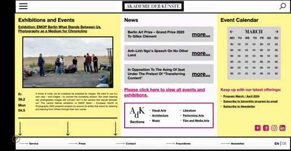

Responsive Redesign
Role: Web Designer, Front-end Developer
Skills: HTML/CSS Architecture, High Fidelity Mock-Ups, Media Queries, Accessibility Integration
Timeline: March - April 2025
I approached this project with the question: How can we make an aesthetic web experience actually usable—especially across device screens? I set out to redesign a website I love using UX research and front-end design principles to bridge accessibility with visual clarity.
I focused on Akademie Der Kunste (AdK), Berlin's website after struggling with its responsiveness on both laptop and mobile devices. The webpage attempts to "squeeze" in a lot of information, that for the most case feels necessary but is hard to follow and clunky. When examining the interface, I asked myself: How can I balance improving accessibility while preserving visual style?
My process breaks into three parts: first, I assess accessibility; second, aesthetics; and finally, I bridge both in my redesigned interface.
My goals in this project were to:
- Use accessibility frameworks to identify key pain points
- Create a visual brand guide building off AdK's identity
- Balance trade-offs between aesthetic and accessible design
- Enhance my high fidelity prototyping skills in Figma
- Practice front-end development as a UX researcher
Observing AdK's Current Webpage
Before diving into redesign, I wanted to carefully document the current interface and assess how it performs across devices.
Usability Analysis: AdK’s Current Interface
To guide my redesign, I evaluated the site’s accessibility through three key usability heuristics: efficiency, learnability, and memorability.
Efficiency
- Menus and links load quickly, but it’s unclear which elements are clickable.
- Interactive elements like the image gallery feel more aesthetic than functional.
- Redundant navigation paths create unnecessary steps to reach key pages.
- No keyboard shortcuts or autofill — missed opportunities for assistive efficiency.
Learnability
- Visual hierarchy is unclear; lack of contrast and dense information makes scanning difficult.
- Event listings and the sidebar calendar feel disconnected, causing cognitive overload.
- Few visual cues (like buttons or icons) guide new users through the site structure.
- The consistent design language is elegant, but sacrifices clarity for minimalism.
Memorability
- The basic layout is familiar (navbar, search), but multiple nav menus create confusion.
- Navigation back to the homepage is only possible via an unlabeled logo — not intuitive.
- Responsive behavior is limited; mobile users lack clear navigation cues (e.g., hamburger menu).
- Navigation labels are inconsistent, with multiple elements linking to the same content.
- The site’s minimal branding helps highlight artwork but lacks UX affordances.
WebAIM WAVE Accessibility Evaluation
My analysis in efficiency, learnability, and memorability proved to be a valuable exercise to articulate my many thoughts on the design. Though I felt this approach lacked structure and still left some area of subjectivity to play a role in the analysis. AdK is a public arts institution that should be inclusive, to different types of accessibility needs beyond responsive to device types.
To test the accessiblity of the webpage, I used the industry standard tool of WAVE's web accessiblity evaluation tool (WAVE) and this exercise provided these insights:
Errors in the alt text for labelling
-
Image alternative text is not present.
-
Image without alternative text results in an empty link.
-
Missing form label – form controls are missing some corresponding labels
-
I agree with the problems detected, though these are hard to catch at first without screen reader use.
Text is very small
-
Text which is very small is difficult to read, particularly for those with low vision.
-
Specifically highlights which text is sized 10 pixels or smaller.
-
This particularly is of large concern on this webpage as there is a lot of information on the opening page.
This results in really small labelling and text overcrowding in certain areas.
Low contrast between text & background colors
-
Adequate contrast of text is necessary for all users, especially users with low vision.
-
The particular problem is that smaller text (18px and below) requires more contrast between the foreground (text)
and background color (mainly white on the homepage).
Visual Design Guide of Redesign
To start my redesign process, I examined AdK's existing interface, but now from a purely aesthetic perspective.
I noticed the following elements:
- The liveliness and bright colors of AdK's print work (e.g., posters, brochures) did not translate to their website
- The use of their signature font in their logo was under-used on their website
- The website lacked personal brand and character compared to some of my other favorite museums of that caliber:
Figma High Fidelity Mockups
The visual style guide, helped me understand the color scheme and requirements of my webpage, but I wanted to further ideate on how to integrate my design observations into my high fidelity prototype.
For me, this meant seeking out inspirational websites from similar organizations—ones that effectively balance heavy visual design with dense information. I found two sources of inspiration that do this well: Slanted Magazine and Schauspielhaus Frankfurt.
Key Takeaways:
- Use color blocks or symbols to visually distinguish content
- Integrate vertically scrollable containers to manage density
- Leverage bold typography and vibrant color while keeping layout flat and intuitive

This led me to designing my first set of high fidelity mock-ups on Figma...
Each screen size version, I made annotations on potential Flexbox solutions and/or ideas as I think about how my design could translate into front-end development.

You can find my full Figma High Fidelity Mock Ups here.
Turning Mockups into a Live Responsive Site
Finally, I wanted to challenge myself by coding a responsive version of my Figma design using pure HTML/CSS, to really understand how CSS media queries and flexible box (flexbox) layout work in practice.
Playaround with the deployed Responsive Redesign on GitHub!
Key Takeaways:
- My design is not fully responsive & that's ok! Designing for responsiveness is hard and takes a lot of care and thoughtfullness
- Responsiveness does not only mean adapting to window resizing, but including aria-labelling throughout HTML structures
- Balancing aesthetic choices and accessibility is difficult, and requires evaluating design trade-offs
- Defining user base in accessibility web design is critical: most users visiting AdK are looking for aesthetic experiences, so I tailored my design to that user base. But further research should be done to this point
- Running real user tests and receiving feedback from different user groups, would prompt me to reiterate on this first design